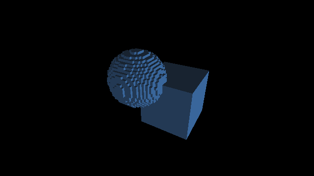
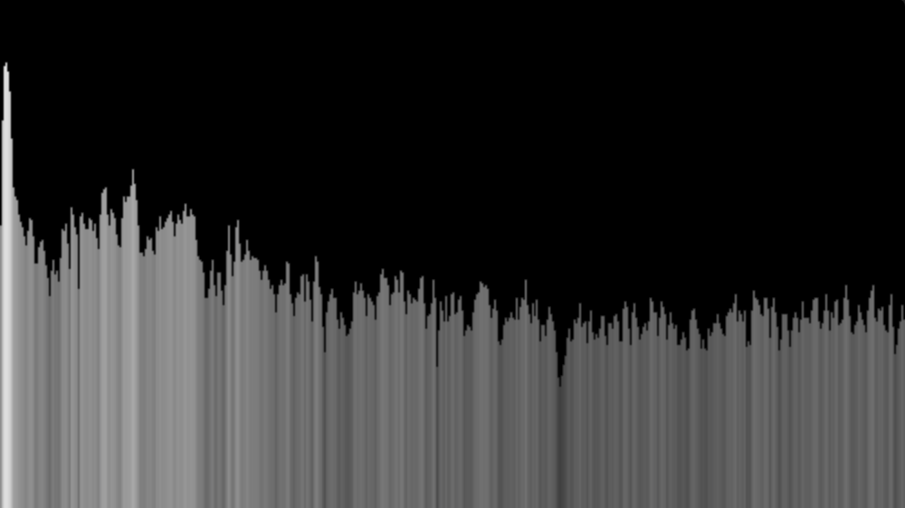
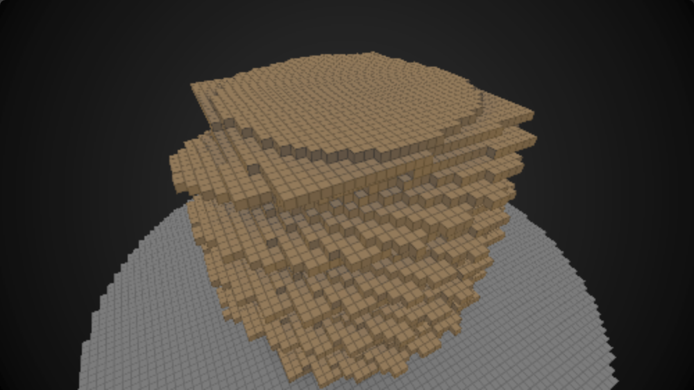
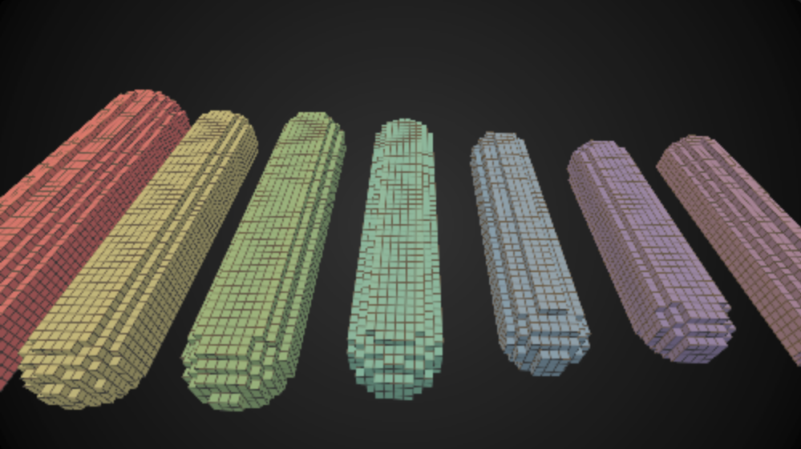

   
Raymarching, voxélisation & visualisation musicale | Creative Code Paris | 10 octobre 2017
Présentation:
Raymarching, voxélisation & visualisation musicale
Exemples et démos:
Raymarching standard
(WebGL / shadertoy)
Raymarching voxélisé
(WebGL / shadertoy)
Détection d'arêtes
(WebGL / shadertoy)
Occlusion ambiante
(WebGL / shadertoy)
Signal audio en domaine temporel
(
Shadertoy
)
Signal audio en domaine fréquentiel
(
Shadertoy
)
Démo 1 (objet non trivial voxélisé)
(
Shadertoy
)
Démo 2 (analyseur de spectre en capsules voxélisées)
(
Shadertoy
)